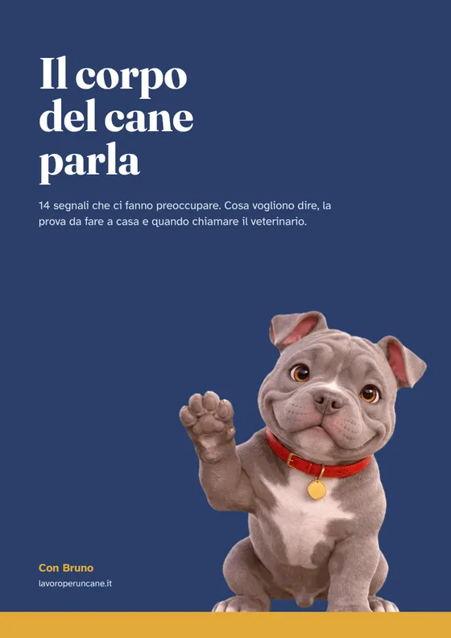

Lavoro per un cane
Lavoro per un cane
Grazie! Ecco la tua guida
Hai appena aiutato Bruno a tenere il sito gratis per tutti. Scarica il PDF e salvalo: lo ritrovi quando ti serve.

Scarica la guida (PDF, 3 MB) Sul telefono: aprila e tocca "Condividi", poi "Salva in File" o "Scarica". Se il pulsante non parte, tienilo premuto e scegli "Scarica link".
Stampala o regalala
È in formato A4: si stampa bene anche a casa. La seconda pagina è la dedica, con Per… e Da…: è pronta per un regalo di Natale a chi ha un cane.
Puoi anche mandarla su WhatsApp: allega il PDF che hai appena scaricato, oppure manda questo messaggio a chi ha un cane.
Condividila su WhatsAppFai vedere il codice a un amico
Inquadrandolo con la fotocamera si apre la pagina della guida.